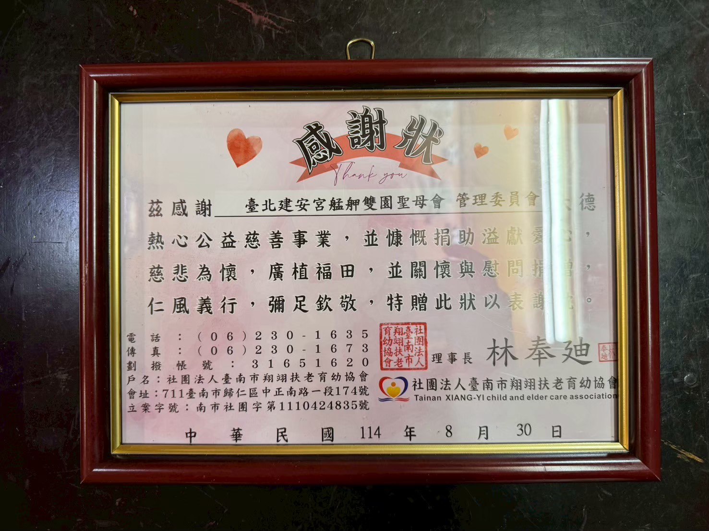
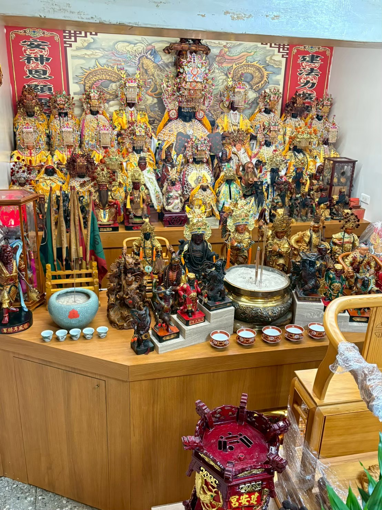
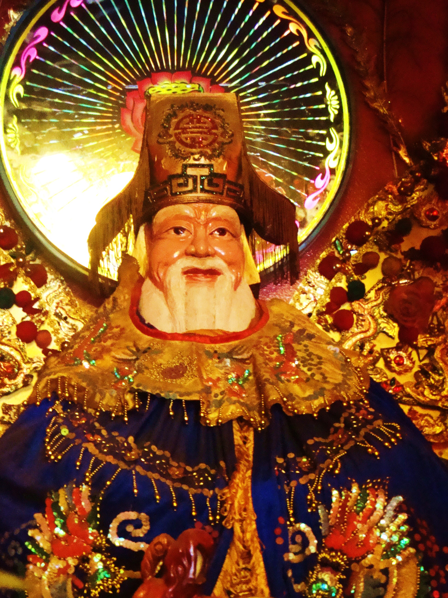
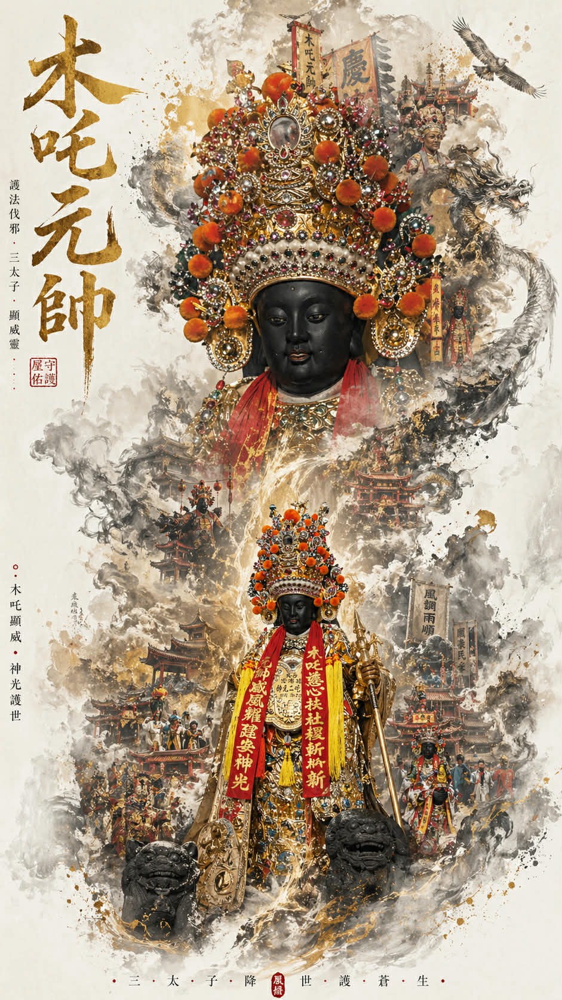
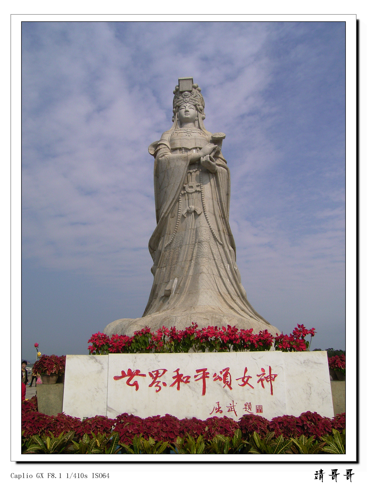
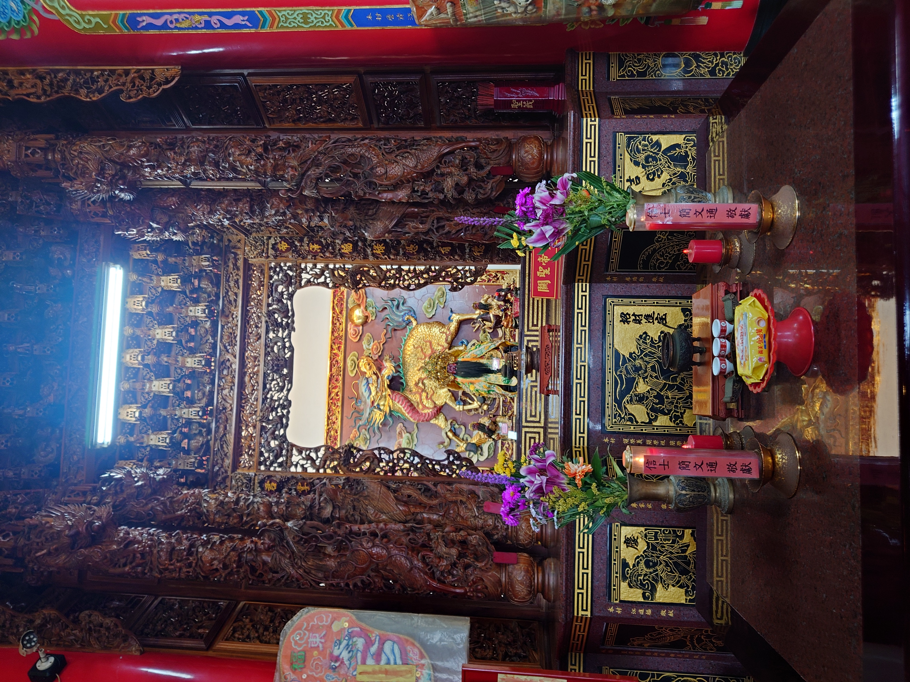
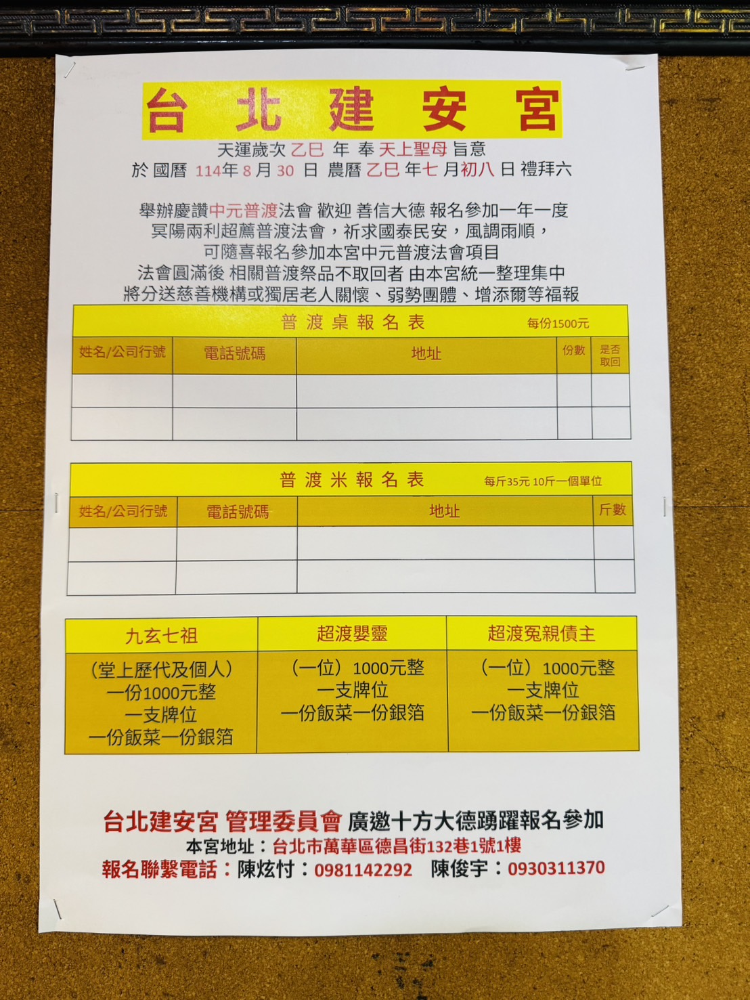
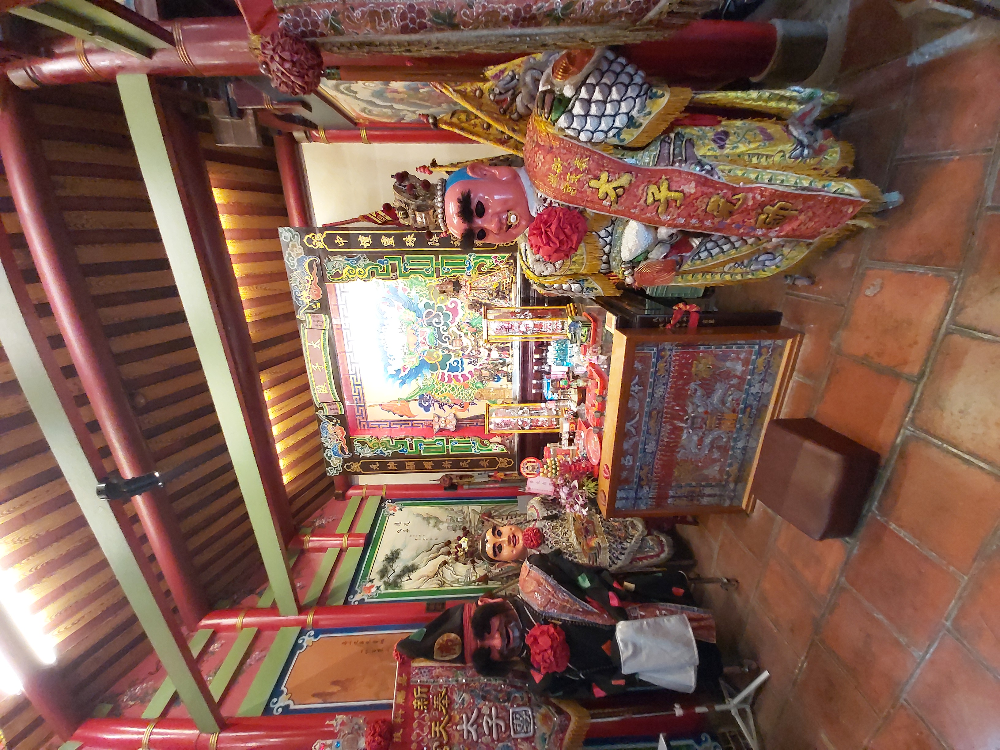

農 曆
正月
嚴 格 時 間 軸
活動路線
自最早至最近 ・ 左右滑動瀏覽完整香火軌跡
乙巳年 → 丙午年 ・ 共 20 個重要活動
← 左右滑動 ・ 拖動瀏覽 →
起 點

2025 ・ 08 ・ 30
乙巳年 ・ 七月初八
慶讚中元普渡
冥陽兩利超薦普渡 ・ 年度盛事
2025 ・ 10 ・ 06
乙巳年 ・ 八月十五
建安宮 ・ 宮慶
本宮年度宮慶 ・ 信眾共聚

2025 ・ 11 ・ 29
乙巳年 ・ 十月初十
南方澳 ・ 會香
出訪南天宮會香交誼

2025 ・ 114年度
軟身聖母換衣帽
為主祀媽祖換上新衣帽
2026 ・ 01 ・ 12
乙巳年 ・ 十一月廿三
南方澳蒞臨參香
貴賓長官蒞臨指導

2026 ・ 01 ・ 30
乙巳年 ・ 十二月十二
送香條
向太子宮、港口宮送香條 ・ 進香前奏

2026 ・ 02 ・ 07
乙巳年 ・ 十二月二十
清 囤
年終清囤淨爐 ・ 整肅本宮

2026 ・ 02 ・ 15
乙巳年 ・ 臘月廿八
小年夜拜天公
叩謝極無極聖祖萬壽
乙巳 → 丙午
2026/02/17 春節

2026 ・ 02 ・ 24
丙午年 ・ 正月初八子時
第一次補財庫
玉皇大天尊聖誕前夕 ・ 賜福賜財

2026 ・ 02 ・ 25
丙午年 ・ 正月初九
玉皇大帝聖誕
天公聖誕千秋 ・ 萬壽無疆
2026 ・ 02 ・ 28
丙午年 ・ 正月十二
開燈安斗 ・ 新春補運
燃點平安總斗、財利、元辰、光明、太歲燈

2026 ・ 03 ・ 03
丙午年 ・ 正月十五
天官大帝聖誕
上元節 ・ 聖誕千秋萬壽

2026 ・ 03 ・ 20
丙午年 ・ 二月初二
濟公禪師聖誕 ・ 福德正神得道飛昇
同祀濟公三禪師 ・ 同日合慶

2026 ・ 丙午年
祭 天 台
中華民國115年 ・ 天運歲次丙午年

2026 ・ 04 ・ 25-26
開光大典 ・ 恭迎謝范二將軍
回駕萬華繞境 ・ 信眾雲集
★ 即將舉辦 ★

前夜祝壽
2026 ・ 05 ・ 08
丙午年 ・ 三月廿二 ・ 禮拜五 ・ 晚上 9:00
天上聖母聖誕祝壽
恭祝本宮天上聖母聖誕千秋 ・ 祝壽香塔 $1,500/對 ・ 考量士農工商 祝壽提早
前往登記 →

2026 ・ 08 ・ 06
丙午年 ・ 六月廿四
關聖帝君聖誕
恩主公千秋 ・ 開基神尊


2026 ・ 10 ・ 19
丙午年 ・ 九月初九
中壇元帥聖誕
三太子千秋 ・ 開基神尊

2027 ・ 02 ・ 04
丙午年 ・ 臘月廿八
小年夜拜天公
叩謝極無極聖祖萬壽
續 香 火
※ 時程依本宮公告為準，未來活動陸續更新